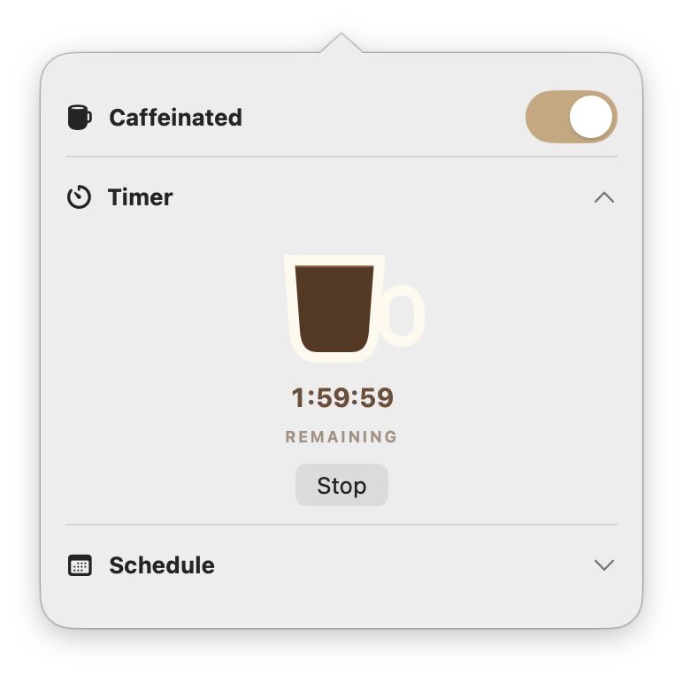
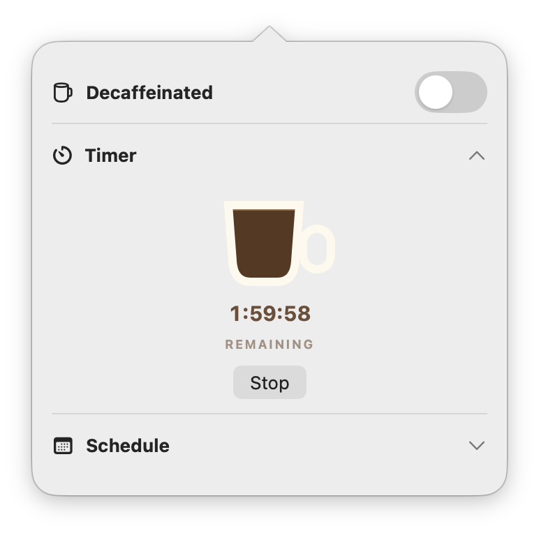
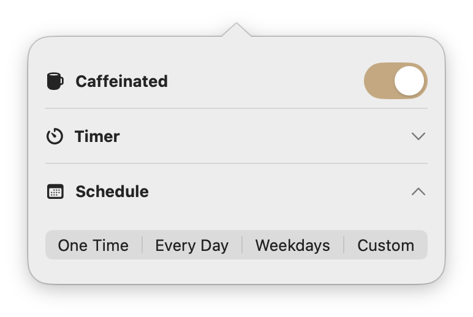

Download.
Open the ZIP and drag Caffeine Toggle into Applications. No Xcode or Terminal needed.
Caffeine Toggle for macOS
A tiny native menu-bar app with an adorable coffee-cup Timer and four simple scheduling modes—so work stays alive exactly when you want.
No Xcode or Terminal needed. Download, unzip, and drag to Applications.
First launch: Control-click the app and choose Open. If macOS still blocks it, use System Settings → Privacy & Security → Open Anyway.
Apple Development-signed · Not notarized
No timer running
One switch. Two honest states. Your schedule.
The mug sits directly in the menu bar beside your system controls. Left-click it for instant control; right-click it for the attached Timer and Schedule panel.



How it works
New in version 3.0
Pick a start and stop time, including overnight windows. Custom mode lets each selected weekday keep its own independent window.
Open the ZIP and drag Caffeine Toggle into Applications. No Xcode or Terminal needed.
The menu-bar mug changes immediately between empty and filled.
Open the directly attached panel for a one-off Timer or one of four Schedule modes.
Turning Caffeine off pauses an active Timer. Turning it back on resumes from the same time and coffee level.
Never put a caffeinated Mac in a bag, sleeve, bed, or poorly ventilated space. Closed-lid AI workloads can generate substantial heat. Keep the Mac plugged in on a hard, open, ventilated surface.
Practical guides
Questions, answered
Caffeine Toggle combines a macOS power assertion with a clamshell-sleep override. When the full mug is on, active local work can continue after the display closes. Because the clamshell interface is private and unsupported by Apple, test it on your own Mac before relying on it.
The Mac stays awake, so local agents, terminal commands, builds, downloads, and active network work can continue. A remote website or service may still apply its own timeout independently.
With the lid open and Caffeine Toggle on, the current build prevents automatic display sleep. Closing the lid turns off the internal display; continued operation relies on a private, unsupported clamshell API and should be physically tested on your Mac before you rely on it.
Yes. Open Timer, enter 2 hours, and press Start Timer. The cup begins full, drains with the countdown, and empties when Caffeine turns off at zero.
Yes. Choose One Time, Every Day, Weekdays, or Custom. Custom supports any combination of Sunday through Saturday with an independent start and stop window for each selected day.
Caffeine Toggle stays intentionally focused: one native menu-bar mug, an immediately understandable Timer, and straightforward schedules. Amphetamine remains the better fit for advanced triggers and extensive configuration.
Download the ZIP, open it, and drag Caffeine Toggle into Applications. On the first launch, Control-click the app and choose Open. If macOS still blocks it, use System Settings → Privacy & Security → Open Anyway. Version 3.0 is signed with an Apple Development certificate but is not yet notarized.
Free, open source, and built for the long-running work that shouldn’t stop when your screen does.
Apple Development-signed · Not notarized · First launch may require Control-click → Open